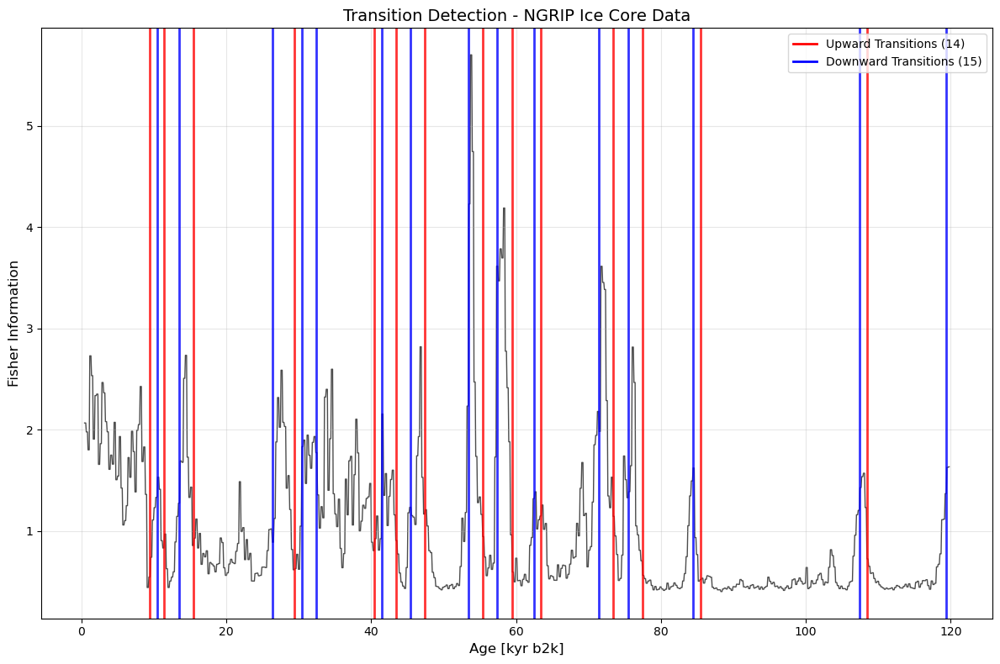
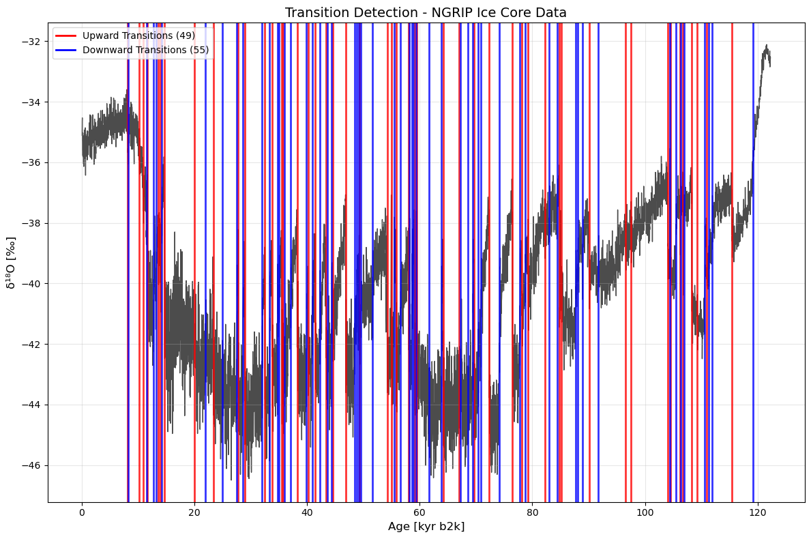
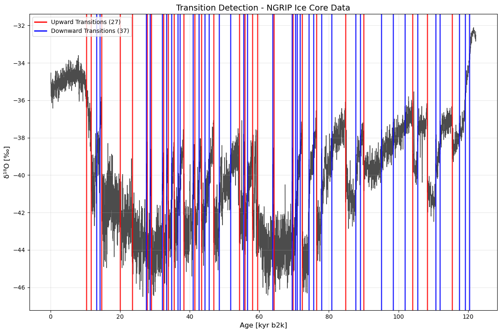

ammonyte.core package¶
Submodules¶
ammonyte.core.recurrence_matrix module¶
- class ammonyte.core.recurrence_matrix.RecurrenceMatrix(matrix, time, epsilon, m, tau, series=None, value_name=None, value_unit=None, time_name=None, time_unit=None, label=None)[source]¶
Bases:
objectRecurrence matrix object. Used for Recurrence Quantification Analysis (RQA).
- laplacian_eigenmaps(w_size, w_incre)[source]¶
Function to run regime change detection workflow
- Parameters:
w_size (int) – Window size for the fisher information
w_incre (int) – Window increment for the fisher information
- Returns:
FI_series – RQARes object containing the Fisher Information time series derived from the Laplacian eigenmaps of the recurrence matrix.
- Return type:
ammonyte.RQARes
- plot(figsize=(8, 8), xlabel=None, ylabel=None, title=None, imshow_kwargs=None)[source]¶
Plotting function for recurrence matrices
- Parameters:
figsize (tuple) – Size of figure
xlabel (str) – Label on x axis (if time name and units are present they will be used)
ylabel (str) – Label on y axis (if time name and units are present they will be used)
title (str) – Title of the plot
imshow_kwargs (dict) – Dictionary of key word arguments for the imshow method from matplotlib.axes.Axes.imshow
- Returns:
fig (matplotlib.figure.Figure) – The figure object from matplotlib. See matplotlib.pyplot.figure for details.
ax (matplotlib.axes.Axes) – The axis object from matplotlib. See matplotlib.axes for details.
See also
matplotlib.axes.Axes.imshow
ammonyte.core.recurrence_network module¶
- class ammonyte.core.recurrence_network.RecurrenceNetwork(matrix, time, epsilon, series=None, value_name=None, value_unit=None, time_name=None, time_unit=None, label=None)[source]¶
Bases:
RecurrenceMatrixRecurrence network object. Used for Recurrence Network Analysis (RNA).
Child of ammonyte.RecurrenceMatrix, so it has all of the RecurrenceMatrix methods plus additional methods defined here
ammonyte.core.rqa_res module¶
- class ammonyte.core.rqa_res.RQARes(time, value, time_name=None, time_unit=None, value_name=None, value_unit=None, series=None, label=None, m=None, tau=None, eps=None, eigenmap=None, w_size=None, w_incre=None)[source]¶
Bases:
SeriesClass for storing the result of various RQA techniques
- confidence_fill_plot(ax=None, line_color=None, fill_color=None, fill_alpha=None, transition_interval=None, xlabel=None, ylabel=None, marker=None, markersize=None, linestyle=None, linewidth=None, alpha=None, label=None, title=None, zorder=None, plot_kwargs=None, ci_kwargs=None, background_series=None, background_kwargs=None, legend=True, lgd_kwargs=None)[source]¶
Function for plotting rqa results with confidence bounds
- Parameters:
ax (matplotlib.axes object) – Axes to plot on, if None new plot will be generated
line_color (str, tuple) – String or rgb tuple to use for line color
fill_color (str, tuple) – String or rgb tuple to use for fill color in between lines
fill_alpha (float) – Transparency of the fill, default is .1
transition_interval (list,tuple) – Upper and lower bound for the transition interval
marker (str) – e.g., ‘o’ for dots See matplotlib.markers for details
markersize (float) – the size of the marker
linestyle (str) – e.g., ‘–’ for dashed line See matplotlib.linestyles for details
linewidth (float) – the width of the line
alpha (float) – Transparency of the line
label (str) – the label for the line
xlabel (str) – the label for the x-axis
ylabel (str) – the label for the y-axis
title (str) – the title for the figure
zorder (int) – The default drawing order for all lines on the plot
plot_kwargs (dict) – Key word arguments for the main plot, see `pyleoclim.Series.plot <https://pyleoclim-util.readthedocs.io/en/latest/core/api.html#series-pyleoclim-series>_ for details
ci_kwargs (dict) – Key word arguments for calculating the confidence interval. Only to be used if transition_interval is not passed. See ammonyte.utils.sampling.confidence_interval for details
background_series (pyleoclim.Series) – Optional to pass a different series that will be plotted behind the main series plot
background_kwargs (dict) – Key word arguments for the background plot. If none are passed, the color of the main plot will be re-used and alpha will be set to .2
legend (bool; {True,False}) – Whether or not to plot the legend
lgd_kwargs (dict)
- Returns:
fig (matplotlib.figure) – The figure object from matplotlib. See matplotlib.pyplot.figure for details.
ax (matplotlib.axis) – The axis object from matplotlib. See matplotlib.axes for details.
- confidence_smooth_plot(block_size, figsize=(12, 8), ax=None, transition_interval=None, color=None, label=None, xlabel=None, ylabel=None, title=None, ci_kwargs=None, background_series=None, background_kwargs=None, hline_kwargs=None, ci_plot_kwargs=None, legend=True, lgd_kwargs=None)[source]¶
Function for plotting rqa results with confidence bounds
- Parameters:
block_size (int) – Size of smoothing block to use.
figsize (tuple, optional) – Size of the figure. Default is (12, 8).
ax (matplotlib.axes.Axes, optional) – Axes to plot on. If None, a new figure will be generated.
transition_interval (list,tuple) – Upper and lower bound for the transition interval
color (str, tuple) – String or rgb tuple to use for marker color
label (str) – the label for the Fisher Information
xlabel (str) – the label for the x-axis
ylabel (str) – the label for the y-axis
title (str) – the title for the figure
background_series (pyleoclim.Series) – Optional to pass a different series that will be plotted behind the main series plot
background_kwargs (dict) – Key word arguments for the background plot. If none are passed, the color of the main plot will be re-used and alpha will be set to .2
hline_kwargs (dict) – Key word arguments for the Fisher Information statistic plot. Passed to matplotlib.axes.Axes.hlines.
ci_plot_kwargs (dict) – Key word arguments for the confidence interval plot. Passed to matplotlib.axes.Axes.fill_between.
legend (bool; {True,False}) – Whether or not to plot the legend
lgd_kwargs (dict) – Key word arguments for the legend. Passed to matplotlib.axes.Axes.legend.
- Returns:
fig (matplotlib.figure) – The figure object from matplotlib. See matplotlib.pyplot.figure for details.
ax (matplotlib.axis) – The axis object from matplotlib. See matplotlib.axes for details.
See also
ammonyte.utils.sampling.confidence_interval,matplotlib.axes.Axes.hlines,matplotlib.axes.Axes.fill_between
- lerm_transitions(transition_interval=None, upper=95, lower=5, w=50, n_samples=10000)[source]¶
Detect transitions using LERM Fisher Information threshold crossings
This method should be applied to a Fisher Information series (RQARes object) obtained from LERM analysis, typically after smoothing.
- Parameters:
transition_interval (tuple, optional) – (upper_bound, lower_bound) for detecting transitions. If None, automatically computes via bootstrapping.
upper (int, optional) – Upper percentile for confidence interval. Default is 95 Only used if transition_interval is None.
lower (int, optional) – Lower percentile for confidence interval. Default is 5 Only used if transition_interval is None.
w (int, optional) – Bootstrap sample size. Default is 50
n_samples (int, optional) – Number of bootstrap samples. Default is 10000
- Returns:
Object containing detected transitions with plotting methods
- Return type:
Examples
Complete LERM workflow:
import os, ammonyte as amt # Load data ngrip = amt.Series.from_csv(os.path.join(os.path.dirname(amt.__file__), 'data', 'NGRIP.csv')) # LERM analysis NGRIP_td = amt.TimeEmbeddedSeries(ngrip, m=11) NGRIP_epsilon = NGRIP_td.find_epsilon(eps=1, target_density=0.05) NGRIP_rm = NGRIP_epsilon['Output'] NGRIP_lp = NGRIP_rm.laplacian_eigenmaps(w_size=20, w_incre=4) NGRIP_lp_smooth = amt.utils.fisher.smooth_series(NGRIP_lp, block_size=3) # Detect transitions transitions = NGRIP_lp_smooth.lerm_transitions() print(transitions) transitions.plot()
Time axis values sorted in ascending order Time axis values sorted in ascending order
Initial density is 0.0003 Initial density is not within the tolerance window, searching... Epsilon: 1.4970, Density: 0.0018 Epsilon: 1.9787, Density: 0.0062 Epsilon: 2.4169, Density: 0.0123 Epsilon: 2.7937, Density: 0.0186 Epsilon: 3.1080, Density: 0.0244 Epsilon: 3.3643, Density: 0.0297
Epsilon: 3.5676, Density: 0.0344 Epsilon: 3.7239, Density: 0.0383 Epsilon: 3.8409, Density: 0.0414 Epsilon: 3.8409, Density: 0.0414.
Deterministic Transition Detection Results - NGRIP Ice Core Data ================================================================ +----------+---------------------+----------------+------------------+---------------------+ | Method | Total Transitions | Upward Jumps | Downward Jumps | Series Label | +==========+=====================+================+==================+=====================+ | LERM | 29 | 14 | 15 | NGRIP Ice Core Data | +----------+---------------------+----------------+------------------+---------------------+ Transition Details: 1. Time: 9.43 kyr b2k, Direction: Upward 2. Time: 10.43 kyr b2k, Direction: Downward 3. Time: 11.43 kyr b2k, Direction: Upward 4. Time: 13.43 kyr b2k, Direction: Downward 5. Time: 15.43 kyr b2k, Direction: Upward 6. Time: 26.43 kyr b2k, Direction: Downward 7. Time: 29.43 kyr b2k, Direction: Upward 8. Time: 30.43 kyr b2k, Direction: Downward 9. Time: 32.43 kyr b2k, Direction: Downward 10. Time: 40.43 kyr b2k, Direction: Upward 11. Time: 41.43 kyr b2k, Direction: Downward 12. Time: 43.43 kyr b2k, Direction: Upward 13. Time: 45.43 kyr b2k, Direction: Downward 14. Time: 47.43 kyr b2k, Direction: Upward 15. Time: 53.43 kyr b2k, Direction: Downward 16. Time: 55.43 kyr b2k, Direction: Upward 17. Time: 57.43 kyr b2k, Direction: Downward 18. Time: 59.43 kyr b2k, Direction: Upward 19. Time: 62.43 kyr b2k, Direction: Downward 20. Time: 63.43 kyr b2k, Direction: Upward 21. Time: 71.43 kyr b2k, Direction: Downward 22. Time: 73.43 kyr b2k, Direction: Upward 23. Time: 75.43 kyr b2k, Direction: Downward 24. Time: 77.43 kyr b2k, Direction: Upward 25. Time: 84.43 kyr b2k, Direction: Downward 26. Time: 85.43 kyr b2k, Direction: Upward 27. Time: 107.43 kyr b2k, Direction: Downward 28. Time: 108.43 kyr b2k, Direction: Upward 29. Time: 119.43 kyr b2k, Direction: Downward Method Parameters: transition_interval: (1.2015639672583995, 0.8601078400645489) upper_bound: 1.2015639672583995 lower_bound: 0.8601078400645489 upper_percentile: 95 lower_percentile: 5 bootstrap_window: 50 bootstrap_samples: 10000
(<Figure size 1200x800 with 1 Axes>, <Axes: title={'center': 'Transition Detection - NGRIP Ice Core Data'}, xlabel='Age [kyr b2k]', ylabel='Fisher Information'>)
Custom confidence bounds:
transitions = NGRIP_lp_smooth.lerm_transitions( transition_interval=(0.025, 0.010) )
- plot_eigenmaps(groups, axes, figsize=(12, 12), cmap='viridis', cmap_kwargs=None, ax=None, title=None)[source]¶
Plot Laplacian eigenmaps coloured by time group
Displays a 2D scatter plot of two eigenvector axes from the Laplacian eigenmaps, colour-coded by the time groups provided. Useful for visually identifying distinct dynamical regimes or state-space structures in the data.
Only works when the RQARes has been created via RecurrenceMatrix.laplacian_eigenmaps.
- Parameters:
groups (list of list or tuple; (start, stop)) – List of (start, stop) time pairs defining the groups for colour coding. Should be ordered in time.
axes (list or tuple) – Indices of the eigenvector axes to plot. Must be of length 2.
figsize (list or tuple, optional) – Size of the figure. Default is (12, 12).
cmap (str or list, optional) – Colour map for coding groups by time. Either the name of a matplotlib colour map or a list of colours. Default is ‘viridis’.
cmap_kwargs (dict, optional) – Keyword arguments passed to ax.figure.colorbar.
ax (matplotlib.axes.Axes, optional) – Axes object to plot on. If None, a new figure is created.
title (str, optional) – Title for the plot. If None, auto-generated from the object label.
- Returns:
fig (matplotlib.figure.Figure) – The figure object from matplotlib. See matplotlib.pyplot.figure for details.
ax (matplotlib.axes.Axes) – The axis object from matplotlib. See matplotlib.axes for details.
See also
ammonyte.RecurrenceMatrix.laplacian_eigenmaps
- plot_eigenmaps_FI(groups, axes, block_smooth=True, cmap='viridis', cmap_kwargs=None, figsize=(18, 12), ax=None, FI_axis_lims=None, scale=(1, 1, 1), title=None)[source]¶
Plot Laplacian eigenmaps as a function of Fisher Information in 3D
Displays a 3D scatter plot with Fisher Information on one axis and two eigenvector axes on the others, colour-coded by the time groups provided. Useful for inspecting how dynamical regimes relate to Fisher Information values.
Only works when the RQARes has been created via RecurrenceMatrix.laplacian_eigenmaps.
- Parameters:
groups (list of list or tuple; (start, stop)) – List of (start, stop) time pairs used for block smoothing and colour coding.
axes (list or tuple) – Indices of the eigenvector axes to plot against Fisher Information. Must be of length 2.
block_smooth (bool; {True,False}) – Whether to calculate and display the block mean of Fisher Information. Default is True.
cmap (str or list, optional) – Colour map for coding groups by time. Either the name of a matplotlib colour map or a list of colours. Default is ‘viridis’.
cmap_kwargs (dict, optional) – Keyword arguments passed to ax.figure.colorbar.
figsize (list or tuple, optional) – Size of the figure. Default is (18, 12).
ax (matplotlib.axes.Axes, optional) – Axes object to plot on. Must use projection=’3d’ if passed. If None, a new 3D figure is created.
FI_axis_lims (list or tuple, optional) – (min, max) boundaries for the Fisher Information axis.
scale (tuple, optional) – (x, y, z) scaling factors to stretch or compress the 3D axes independently. Default is (1, 1, 1).
title (str, optional) – Title for the plot.
- Returns:
fig (matplotlib.figure.Figure) – The figure object from matplotlib. See matplotlib.pyplot.figure for details.
ax (matplotlib.axes.Axes) – The axis object from matplotlib. See matplotlib.axes for details.
See also
ammonyte.RecurrenceMatrix.laplacian_eigenmaps,ammonyte.RQARes.plot_eigenmaps
ammonyte.core.series module¶
- class ammonyte.core.series.Series(time, value, time_unit=None, time_name=None, value_name=None, value_unit=None, label=None, importedFrom=None, archiveType=None, control_archiveType=False, log=None, keep_log=False, sort_ts='ascending', dropna=True, verbose=True, clean_ts=False, auto_time_params=None)[source]¶
Bases:
SeriesAmmonyte series object, launching point for most ammonyte analysis.
Child of pyleoclim.Series, so shares all methods with pyleoclim.Series plus those defined here.
- determinism(window_size, overlap, m, tau, eps)[source]¶
Calculate determinism of a series
Note that series must be evenly spaced for this method. See interp, bin, and gkernel methods in parent class pyleoclim.Series for details.
- Parameters:
window_size (int) – Size of window to use when calculating recurrence plots for determinism statistic. Note this is in units of the time axis.
overlap (int) – Amount of overlap to allow between windows. Note this is in units of the time axis.
m (int) – Embedding dimension to use when performing time delay embedding,
tau (int) – Time delay to use when performing time delay embedding
eps (float) – Size of radius to use to calculate recurrence matrix
- Returns:
det_series – Ammonyte.Series object containing time series of the determinism statistic
- Return type:
ammonyte.Series
- embed(m, tau=None)[source]¶
Create a time delay embedding from an ammonyte.Series object
- Parameters:
m (int) – Embedding dimension (number of delay coordinates).
tau (int, optional) – Time delay for the embedding. If None, estimated automatically via the first minimum of mutual information using ammonyte.utils.parameters.tau_search.
- Returns:
TimeEmbeddedSeries – Time delay embedded representation of the series.
- Return type:
ammonyte.TimeEmbeddedSeries
See also
ammonyte.utils.parameters.tau_search,ammonyte.TimeEmbeddedSeries
- classmethod from_csv(file_path)[source]¶
Load an ammonyte Series from a CSV file with pyleoclim metadata format.
- Parameters:
file_path (str) – Path to the CSV file with pyleoclim metadata header format (### delimited)
- Returns:
An ammonyte Series object loaded from the CSV file
- Return type:
ammonyte.Series
Examples
>>> ts = ammonyte.Series.from_csv('data/NGRIP.csv')
- kstest(w_min, w_max, n_w=15, d_c=0.75, n_c=3, s_c=1.5, x_c=None)[source]¶
Detect tipping points using Kolmogorov-Smirnov test
Applies sliding window KS test to detect abrupt transitions in time series data using the method of Bagniewski et al. (2021).
- Parameters:
w_min (float) – Size of smallest sliding window in time units
w_max (float) – Size of largest sliding window in time units
n_w (int) – Number of window lengths to test. Default is 15
d_c (float) – Cut-off threshold for KS statistic. Default is 0.75
n_c (int) – Minimum sample size per window. Default is 3
s_c (float) – Standard deviation ratio threshold. Default is 1.5
x_c (float) – Change threshold. If None, auto-calculated
- Returns:
Object containing detected transitions with their corresponding KS D-statistics and p-values, plus methods for analysis
- Return type:
Examples
Basic tipping point detection:
import os, ammonyte as amt ngrip = amt.Series.from_csv(os.path.join(os.path.dirname(amt.__file__), 'data', 'NGRIP.csv')) transitions = ngrip.kstest(w_min=0.12, w_max=2.5, n_w=15, d_c=0.77, n_c=3, s_c=2, x_c=0.8) print(transitions)
Time axis values sorted in ascending order Time axis values sorted in ascending order
Deterministic Transition Detection Results - NGRIP Ice Core Data ================================================================ +----------+---------------------+----------------+------------------+---------------------+ | Method | Total Transitions | Upward Jumps | Downward Jumps | Series Label | +==========+=====================+================+==================+=====================+ | KS test | 104 | 49 | 55 | NGRIP Ice Core Data | +----------+---------------------+----------------+------------------+---------------------+ Transition Details: 1. Time: 8.14 kyr b2k, Direction: Upward, d_statistics: 0.4080, p_values: < 1e-8 2. Time: 8.30 kyr b2k, Direction: Downward, d_statistics: 0.3760, p_values: < 1e-7 3. Time: 10.20 kyr b2k, Direction: Upward, d_statistics: 0.9203, p_values: < 1e-56 4. Time: 10.86 kyr b2k, Direction: Upward, d_statistics: 0.9680, p_values: < 1e-65 5. Time: 11.52 kyr b2k, Direction: Downward, d_statistics: 0.9040, p_values: < 1e-53 6. Time: 11.68 kyr b2k, Direction: Upward, d_statistics: 0.9520, p_values: < 1e-62 7. Time: 12.78 kyr b2k, Direction: Downward, d_statistics: 0.3520, p_values: < 1e-6 8. Time: 13.26 kyr b2k, Direction: Downward, d_statistics: 0.2160, p_values: < 1e-2 9. Time: 13.56 kyr b2k, Direction: Upward, d_statistics: 0.2640, p_values: < 1e-3 10. Time: 13.96 kyr b2k, Direction: Upward, d_statistics: 0.3760, p_values: < 1e-7 11. Time: 14.18 kyr b2k, Direction: Downward, d_statistics: 0.4240, p_values: < 1e-9 12. Time: 14.68 kyr b2k, Direction: Upward, d_statistics: 0.6160, p_values: < 1e-21 13. Time: 19.94 kyr b2k, Direction: Upward, d_statistics: 0.4320, p_values: < 1e-10 14. Time: 21.88 kyr b2k, Direction: Downward, d_statistics: 0.1600, p_values: 0.08 15. Time: 23.36 kyr b2k, Direction: Upward, d_statistics: 0.4800, p_values: < 1e-12 16. Time: 24.92 kyr b2k, Direction: Downward, d_statistics: 0.2640, p_values: < 1e-3 17. Time: 27.50 kyr b2k, Direction: Downward, d_statistics: 0.2000, p_values: 0.01 18. Time: 27.78 kyr b2k, Direction: Upward, d_statistics: 0.2880, p_values: < 1e-4 19. Time: 28.60 kyr b2k, Direction: Downward, d_statistics: 0.2320, p_values: < 1e-2 20. Time: 28.90 kyr b2k, Direction: Upward, d_statistics: 0.3120, p_values: < 1e-5 21. Time: 32.04 kyr b2k, Direction: Downward, d_statistics: 0.4640, p_values: < 1e-11 22. Time: 32.52 kyr b2k, Direction: Upward, d_statistics: 0.2596, p_values: < 1e-3 23. Time: 33.36 kyr b2k, Direction: Downward, d_statistics: 0.4880, p_values: < 1e-13 24. Time: 33.74 kyr b2k, Direction: Upward, d_statistics: 0.3157, p_values: < 1e-5 25. Time: 34.74 kyr b2k, Direction: Downward, d_statistics: 0.3520, p_values: < 1e-6 26. Time: 35.02 kyr b2k, Direction: Downward, d_statistics: 0.3440, p_values: < 1e-6 27. Time: 35.48 kyr b2k, Direction: Upward, d_statistics: 0.1520, p_values: 0.11 28. Time: 35.76 kyr b2k, Direction: Upward, d_statistics: 0.2080, p_values: < 1e-2 29. Time: 35.94 kyr b2k, Direction: Downward, d_statistics: 0.2320, p_values: < 1e-2 30. Time: 37.06 kyr b2k, Direction: Downward, d_statistics: 0.2320, p_values: < 1e-2 31. Time: 38.22 kyr b2k, Direction: Upward, d_statistics: 0.5600, p_values: < 1e-17 32. Time: 39.90 kyr b2k, Direction: Downward, d_statistics: 0.2240, p_values: < 1e-2 33. Time: 40.16 kyr b2k, Direction: Upward, d_statistics: 0.2160, p_values: < 1e-2 34. Time: 40.96 kyr b2k, Direction: Downward, d_statistics: 0.5440, p_values: < 1e-16 35. Time: 41.46 kyr b2k, Direction: Upward, d_statistics: 0.2160, p_values: < 1e-2 36. Time: 42.28 kyr b2k, Direction: Downward, d_statistics: 0.2960, p_values: < 1e-4 37. Time: 43.36 kyr b2k, Direction: Upward, d_statistics: 0.2160, p_values: < 1e-2 38. Time: 43.66 kyr b2k, Direction: Downward, d_statistics: 0.1440, p_values: 0.15 39. Time: 44.36 kyr b2k, Direction: Downward, d_statistics: 0.4880, p_values: < 1e-13 40. Time: 44.56 kyr b2k, Direction: Upward, d_statistics: 0.3440, p_values: < 1e-6 41. Time: 46.84 kyr b2k, Direction: Upward, d_statistics: 0.5840, p_values: < 1e-19 42. Time: 48.46 kyr b2k, Direction: Downward, d_statistics: 0.4720, p_values: < 1e-12 43. Time: 48.84 kyr b2k, Direction: Downward, d_statistics: 0.5200, p_values: < 1e-15 44. Time: 49.14 kyr b2k, Direction: Downward, d_statistics: 0.5360, p_values: < 1e-16 45. Time: 49.28 kyr b2k, Direction: Upward, d_statistics: 0.5360, p_values: < 1e-16 46. Time: 49.58 kyr b2k, Direction: Downward, d_statistics: 0.6240, p_values: < 1e-22 47. Time: 51.64 kyr b2k, Direction: Downward, d_statistics: 0.7520, p_values: < 1e-34 48. Time: 54.22 kyr b2k, Direction: Upward, d_statistics: 0.7680, p_values: < 1e-35 49. Time: 55.00 kyr b2k, Direction: Upward, d_statistics: 0.4560, p_values: < 1e-11 50. Time: 55.42 kyr b2k, Direction: Downward, d_statistics: 0.2320, p_values: < 1e-2 51. Time: 55.78 kyr b2k, Direction: Upward, d_statistics: 0.2160, p_values: < 1e-2 52. Time: 56.58 kyr b2k, Direction: Downward, d_statistics: 0.5120, p_values: < 1e-14 53. Time: 58.04 kyr b2k, Direction: Upward, d_statistics: 0.4240, p_values: < 1e-9 54. Time: 58.16 kyr b2k, Direction: Downward, d_statistics: 0.4080, p_values: < 1e-8 55. Time: 58.62 kyr b2k, Direction: Downward, d_statistics: 0.5280, p_values: < 1e-15 56. Time: 58.90 kyr b2k, Direction: Downward, d_statistics: 0.6960, p_values: < 1e-28 57. Time: 59.08 kyr b2k, Direction: Upward, d_statistics: 0.7840, p_values: < 1e-37 58. Time: 59.30 kyr b2k, Direction: Downward, d_statistics: 0.7200, p_values: < 1e-30 59. Time: 59.44 kyr b2k, Direction: Upward, d_statistics: 0.7760, p_values: < 1e-36 60. Time: 61.62 kyr b2k, Direction: Downward, d_statistics: 0.2480, p_values: < 1e-3 61. Time: 63.86 kyr b2k, Direction: Downward, d_statistics: 0.1680, p_values: 0.06 62. Time: 64.14 kyr b2k, Direction: Upward, d_statistics: 0.1292, p_values: 0.23 63. Time: 66.96 kyr b2k, Direction: Upward, d_statistics: 0.1200, p_values: 0.33 64. Time: 67.26 kyr b2k, Direction: Downward, d_statistics: 0.1600, p_values: 0.08 65. Time: 68.56 kyr b2k, Direction: Downward, d_statistics: 0.2960, p_values: < 1e-4 66. Time: 69.36 kyr b2k, Direction: Downward, d_statistics: 0.5920, p_values: < 1e-19 67. Time: 69.64 kyr b2k, Direction: Upward, d_statistics: 0.5440, p_values: < 1e-16 68. Time: 70.38 kyr b2k, Direction: Downward, d_statistics: 0.6240, p_values: < 1e-22 69. Time: 70.84 kyr b2k, Direction: Downward, d_statistics: 0.5040, p_values: < 1e-14 70. Time: 72.34 kyr b2k, Direction: Upward, d_statistics: 0.5200, p_values: < 1e-15 71. Time: 74.18 kyr b2k, Direction: Downward, d_statistics: 0.6960, p_values: < 1e-28 72. Time: 76.44 kyr b2k, Direction: Upward, d_statistics: 0.5520, p_values: < 1e-17 73. Time: 77.76 kyr b2k, Direction: Downward, d_statistics: 0.5040, p_values: < 1e-14 74. Time: 78.14 kyr b2k, Direction: Upward, d_statistics: 0.5200, p_values: < 1e-15 75. Time: 78.74 kyr b2k, Direction: Downward, d_statistics: 0.6720, p_values: < 1e-26 76. Time: 79.24 kyr b2k, Direction: Upward, d_statistics: 0.5520, p_values: < 1e-17 77. Time: 82.24 kyr b2k, Direction: Upward, d_statistics: 0.5120, p_values: < 1e-14 78. Time: 83.02 kyr b2k, Direction: Downward, d_statistics: 0.2720, p_values: < 1e-3 79. Time: 84.42 kyr b2k, Direction: Downward, d_statistics: 0.8400, p_values: < 1e-44 80. Time: 84.76 kyr b2k, Direction: Upward, d_statistics: 0.9760, p_values: < 1e-67 81. Time: 85.20 kyr b2k, Direction: Upward, d_statistics: 0.8640, p_values: < 1e-47 82. Time: 87.66 kyr b2k, Direction: Downward, d_statistics: 0.8880, p_values: < 1e-51 83. Time: 88.00 kyr b2k, Direction: Downward, d_statistics: 0.8720, p_values: < 1e-48 84. Time: 88.96 kyr b2k, Direction: Downward, d_statistics: 0.5120, p_values: < 1e-14 85. Time: 90.06 kyr b2k, Direction: Upward, d_statistics: 0.5840, p_values: < 1e-19 86. Time: 91.72 kyr b2k, Direction: Downward, d_statistics: 0.2640, p_values: < 1e-3 87. Time: 96.54 kyr b2k, Direction: Upward, d_statistics: 0.4560, p_values: < 1e-11 88. Time: 97.54 kyr b2k, Direction: Upward, d_statistics: 0.4320, p_values: < 1e-10 89. Time: 104.02 kyr b2k, Direction: Upward, d_statistics: 0.6320, p_values: < 1e-23 90. Time: 104.38 kyr b2k, Direction: Downward, d_statistics: 0.4800, p_values: < 1e-12 91. Time: 104.54 kyr b2k, Direction: Upward, d_statistics: 0.4880, p_values: < 1e-13 92. Time: 105.54 kyr b2k, Direction: Downward, d_statistics: 0.4480, p_values: < 1e-10 93. Time: 106.20 kyr b2k, Direction: Upward, d_statistics: 0.2960, p_values: < 1e-4 94. Time: 106.32 kyr b2k, Direction: Downward, d_statistics: 0.3120, p_values: < 1e-5 95. Time: 106.76 kyr b2k, Direction: Upward, d_statistics: 0.3600, p_values: < 1e-6 96. Time: 106.90 kyr b2k, Direction: Downward, d_statistics: 0.4080, p_values: < 1e-8 97. Time: 108.30 kyr b2k, Direction: Upward, d_statistics: 0.9040, p_values: < 1e-53 98. Time: 109.30 kyr b2k, Direction: Upward, d_statistics: 0.5360, p_values: < 1e-16 99. Time: 110.62 kyr b2k, Direction: Downward, d_statistics: 0.9120, p_values: < 1e-54 100. Time: 110.94 kyr b2k, Direction: Upward, d_statistics: 0.8560, p_values: < 1e-46 101. Time: 111.34 kyr b2k, Direction: Downward, d_statistics: 0.8720, p_values: < 1e-48 102. Time: 111.94 kyr b2k, Direction: Downward, d_statistics: 0.9360, p_values: < 1e-59 103. Time: 115.38 kyr b2k, Direction: Upward, d_statistics: 0.7600, p_values: < 1e-34 104. Time: 119.14 kyr b2k, Direction: Downward, d_statistics: 1.0000, p_values: < 1e-73 Method Parameters: w_min: 0.12 w_max: 2.5 n_w: 15 d_c: 0.77 n_c: 3 s_c: 2 x_c: 0.8
Access transition statistics:
print(f"D-statistics: {transitions.d_statistics}") print(f"P-values: {transitions.p_values}")
D-statistics: [0.408 0.376 0.92031746 0.968 0.904 0.952 0.352 0.216 0.264 0.376 0.424 0.616 0.432 0.16 0.48 0.264 0.2 0.288 0.232 0.312 0.464 0.25961905 0.488 0.31574603 0.352 0.344 0.152 0.208 0.232 0.232 0.56 0.224 0.216 0.544 0.216 0.296 0.216 0.144 0.488 0.344 0.584 0.472 0.52 0.536 0.536 0.624 0.752 0.768 0.456 0.232 0.216 0.512 0.424 0.408 0.528 0.696 0.784 0.72 0.776 0.248 0.168 0.12920635 0.12 0.16 0.296 0.592 0.544 0.624 0.504 0.52 0.696 0.552 0.504 0.52 0.672 0.552 0.512 0.272 0.84 0.976 0.864 0.888 0.872 0.512 0.584 0.264 0.456 0.432 0.632 0.48 0.488 0.448 0.296 0.312 0.36 0.408 0.904 0.536 0.912 0.856 0.872 0.936 0.76 1. ] P-values: [1.08287576e-09 2.93267890e-08 1.58548319e-57 3.48395121e-66 2.08682093e-54 6.99925797e-63 2.86441472e-07 5.73454941e-03 3.07522975e-04 2.93267890e-08 1.85669232e-10 1.78335111e-22 7.46825962e-11 8.14494082e-02 2.08492016e-13 3.07522975e-04 1.32948843e-02 5.65726228e-05 2.31358235e-03 8.90126598e-06 1.60494532e-12 2.86007686e-04 7.28601131e-14 3.81008662e-06 2.86441472e-07 5.90348887e-07 1.11406210e-01 8.80456038e-03 2.31358235e-03 2.31358235e-03 2.15418462e-18 3.67311012e-03 5.73454941e-03 2.55303271e-17 5.73454941e-03 3.10800212e-05 5.73454941e-03 1.49895862e-01 7.28601131e-14 5.90348887e-07 4.43534852e-20 5.84409439e-13 8.80069617e-16 8.49543642e-17 8.49543642e-17 4.21679080e-23 8.30449219e-35 1.58847753e-36 4.31919109e-12 2.31358235e-03 5.73454941e-03 2.74120045e-15 1.85669232e-10 1.08287576e-09 2.76461660e-16 2.86325686e-29 2.60542915e-38 1.47882334e-31 2.07503821e-37 8.72616670e-04 5.85787709e-02 2.25685744e-01 3.30121060e-01 8.14494082e-02 3.10800212e-05 1.15898554e-20 2.55303271e-17 4.21679080e-23 8.35624007e-15 8.80069617e-16 2.86325686e-29 7.50117857e-18 8.35624007e-15 8.80069617e-16 4.20522721e-27 7.50117857e-18 2.74120045e-15 1.77937822e-04 3.75555774e-45 5.64202625e-68 2.05719120e-48 6.46753964e-52 1.49454062e-49 2.74120045e-15 4.43534852e-20 3.07522975e-04 4.31919109e-12 7.46825962e-11 9.71515528e-24 2.08492016e-13 7.28601131e-14 1.13926490e-11 3.10800212e-05 8.90126598e-06 1.36480937e-07 1.08287576e-09 2.08682093e-54 8.49543642e-17 1.04777620e-55 2.66291973e-47 1.49454062e-49 7.41071435e-60 1.17017845e-35 2.19278128e-74]
Plot the results:
transitions.plot()
(<Figure size 1200x800 with 1 Axes>, <Axes: title={'center': 'Transition Detection - NGRIP Ice Core Data'}, xlabel='Age [kyr b2k]', ylabel='δ¹⁸O [‰]'>)
See also
DeterministicTransitions.plotVisualize detected transitions
References
- laminarity(window_size, overlap, m, tau, eps)[source]¶
Calculate laminarity of a series
Note that series must be evenly spaced for this method. See interp, bin, and gkernel methods in parent class pyleoclim.Series for details.
- Parameters:
window_size (int) – Size of window to use when calculating recurrence plots for determinism statistic. Note this is in units of the time axis.
overlap (int) – Amount of overlap to allow between windows Note this is in units of the time axis.
m (int) – Embedding dimension to use when performing time delay embedding,
tau (int) – Time delay to use when performing time delay embedding
eps (float) – Size of radius to use to calculate recurrence matrix
- Returns:
lam_series – Ammonyte.Series object containing time series of the laminarity statistic
- Return type:
ammonyte.Series
- ruptures(algo='Pelt', cost='rbf', pen=None, n_bkps=None, min_size=2, jump=1, width=None, params=None)[source]¶
Detect transitions using ruptures change point detection
Applies ruptures algorithms for offline change point detection.
- Parameters:
algo (str) – Search algorithm. Default is ‘Pelt’ Options: ‘Pelt’, ‘Dynp’, ‘Binseg’, ‘BottomUp’, ‘Window’, ‘KernelCPD’
cost (str) – Cost function (type of change to detect). Default is ‘rbf’ Options: ‘l1’, ‘l2’, ‘rbf’, ‘normal’, ‘ar’, ‘linear’, ‘rank’, ‘mahalanobis’, ‘cosine’, ‘clinear’
pen (float, optional) –
Penalty parameter controlling sensitivity to changepoints (higher = fewer changepoints)
What is penalty? The algorithm minimizes: [fit error] + [number of changepoints × pen] - Low penalty → more changepoints (risk: overfitting, detecting noise as transitions) - High penalty → fewer changepoints (risk: missing real transitions)
Choosing penalty is a user decision based on your data characteristics, expected transition frequency, and tolerance for false positives vs. false negatives. There is no single “correct” penalty value - it requires experimentation and domain knowledge.
Example approaches for selecting penalty: 1. Fixed empirical values: pen = 5, 10, 20, etc. (experiment to find what works) 2. Information criteria (linear penalties that balance fit vs. complexity):
AIC (Akaike Information Criterion) - more liberal, detects more changepoints
BIC (Bayesian Information Criterion) - more conservative, sample-size dependent
mBIC (modified BIC) - even more conservative
Note: The exact formula for each criterion depends on the statistical model and cost function used. For theoretical details, see ruptures documentation.
n_bkps (int, optional) – Exact number of breakpoints to detect (alternative to penalty-based approach) Use when you know how many transitions to expect Note: Cannot be used together with ‘pen’ - choose one or the other
min_size (int) – Minimum samples between change points. Default is 2
jump (int) – Subsample (1=all data, 5=every 5th point). Default is 1
width (int, optional) – Window size (required for Window algorithm)
params (dict, optional) – Additional algorithm-specific parameters
- Returns:
Object containing detected transitions with plot() and to_csv() methods
- Return type:
Examples
Basic transition detection:
import os, ammonyte as amt ngrip = amt.Series.from_csv(os.path.join(os.path.dirname(amt.__file__), 'data', 'NGRIP.csv')) transitions = ngrip.ruptures(algo='Pelt', cost='rbf', pen=5) print(transitions)
Time axis values sorted in ascending order Time axis values sorted in ascending order
Deterministic Transition Detection Results - NGRIP Ice Core Data | ruptures =========================================================================== +----------+---------------------+----------------+------------------+---------------------+ | Method | Total Transitions | Upward Jumps | Downward Jumps | Series Label | +==========+=====================+================+==================+=====================+ | ruptures | 64 | 27 | 37 | NGRIP Ice Core Data | +----------+---------------------+----------------+------------------+---------------------+ Transition Details: 1. Time: 10.25 kyr b2k, Direction: Upward, breakpoint_indices: 510.0000 2. Time: 11.67 kyr b2k, Direction: Upward, breakpoint_indices: 581.0000 3. Time: 13.25 kyr b2k, Direction: Downward, breakpoint_indices: 660.0000 4. Time: 14.19 kyr b2k, Direction: Downward, breakpoint_indices: 707.0000 5. Time: 14.69 kyr b2k, Direction: Upward, breakpoint_indices: 732.0000 6. Time: 19.95 kyr b2k, Direction: Upward, breakpoint_indices: 995.0000 7. Time: 23.51 kyr b2k, Direction: Upward, breakpoint_indices: 1173.0000 8. Time: 27.55 kyr b2k, Direction: Downward, breakpoint_indices: 1375.0000 9. Time: 27.79 kyr b2k, Direction: Upward, breakpoint_indices: 1387.0000 10. Time: 28.61 kyr b2k, Direction: Downward, breakpoint_indices: 1428.0000 11. Time: 28.91 kyr b2k, Direction: Upward, breakpoint_indices: 1443.0000 12. Time: 32.05 kyr b2k, Direction: Downward, breakpoint_indices: 1600.0000 13. Time: 32.51 kyr b2k, Direction: Upward, breakpoint_indices: 1623.0000 14. Time: 33.37 kyr b2k, Direction: Downward, breakpoint_indices: 1666.0000 15. Time: 33.75 kyr b2k, Direction: Upward, breakpoint_indices: 1685.0000 16. Time: 34.75 kyr b2k, Direction: Downward, breakpoint_indices: 1735.0000 17. Time: 35.51 kyr b2k, Direction: Upward, breakpoint_indices: 1773.0000 18. Time: 36.61 kyr b2k, Direction: Downward, breakpoint_indices: 1828.0000 19. Time: 37.19 kyr b2k, Direction: Downward, breakpoint_indices: 1857.0000 20. Time: 38.23 kyr b2k, Direction: Upward, breakpoint_indices: 1909.0000 21. Time: 40.97 kyr b2k, Direction: Downward, breakpoint_indices: 2046.0000 22. Time: 41.47 kyr b2k, Direction: Upward, breakpoint_indices: 2071.0000 23. Time: 42.61 kyr b2k, Direction: Downward, breakpoint_indices: 2128.0000 24. Time: 43.35 kyr b2k, Direction: Upward, breakpoint_indices: 2165.0000 25. Time: 44.37 kyr b2k, Direction: Downward, breakpoint_indices: 2216.0000 26. Time: 45.59 kyr b2k, Direction: Downward, breakpoint_indices: 2277.0000 27. Time: 46.89 kyr b2k, Direction: Upward, breakpoint_indices: 2342.0000 28. Time: 48.47 kyr b2k, Direction: Downward, breakpoint_indices: 2421.0000 29. Time: 51.67 kyr b2k, Direction: Downward, breakpoint_indices: 2581.0000 30. Time: 54.23 kyr b2k, Direction: Upward, breakpoint_indices: 2709.0000 31. Time: 55.43 kyr b2k, Direction: Downward, breakpoint_indices: 2769.0000 32. Time: 55.79 kyr b2k, Direction: Upward, breakpoint_indices: 2787.0000 33. Time: 56.59 kyr b2k, Direction: Downward, breakpoint_indices: 2827.0000 34. Time: 58.05 kyr b2k, Direction: Upward, breakpoint_indices: 2900.0000 35. Time: 59.51 kyr b2k, Direction: Upward, breakpoint_indices: 2973.0000 36. Time: 63.87 kyr b2k, Direction: Downward, breakpoint_indices: 3191.0000 37. Time: 64.15 kyr b2k, Direction: Upward, breakpoint_indices: 3205.0000 38. Time: 69.43 kyr b2k, Direction: Downward, breakpoint_indices: 3469.0000 39. Time: 69.63 kyr b2k, Direction: Upward, breakpoint_indices: 3479.0000 40. Time: 70.39 kyr b2k, Direction: Downward, breakpoint_indices: 3517.0000 41. Time: 70.85 kyr b2k, Direction: Downward, breakpoint_indices: 3540.0000 42. Time: 71.67 kyr b2k, Direction: Downward, breakpoint_indices: 3581.0000 43. Time: 72.35 kyr b2k, Direction: Upward, breakpoint_indices: 3615.0000 44. Time: 74.19 kyr b2k, Direction: Downward, breakpoint_indices: 3707.0000 45. Time: 75.59 kyr b2k, Direction: Downward, breakpoint_indices: 3777.0000 46. Time: 76.45 kyr b2k, Direction: Upward, breakpoint_indices: 3820.0000 47. Time: 77.85 kyr b2k, Direction: Downward, breakpoint_indices: 3890.0000 48. Time: 80.83 kyr b2k, Direction: Downward, breakpoint_indices: 4039.0000 49. Time: 84.77 kyr b2k, Direction: Upward, breakpoint_indices: 4236.0000 50. Time: 87.71 kyr b2k, Direction: Downward, breakpoint_indices: 4383.0000 51. Time: 88.97 kyr b2k, Direction: Downward, breakpoint_indices: 4446.0000 52. Time: 90.05 kyr b2k, Direction: Upward, breakpoint_indices: 4500.0000 53. Time: 95.11 kyr b2k, Direction: Downward, breakpoint_indices: 4753.0000 54. Time: 98.49 kyr b2k, Direction: Downward, breakpoint_indices: 4922.0000 55. Time: 101.81 kyr b2k, Direction: Downward, breakpoint_indices: 5088.0000 56. Time: 104.05 kyr b2k, Direction: Upward, breakpoint_indices: 5200.0000 57. Time: 105.47 kyr b2k, Direction: Downward, breakpoint_indices: 5271.0000 58. Time: 108.31 kyr b2k, Direction: Upward, breakpoint_indices: 5413.0000 59. Time: 110.65 kyr b2k, Direction: Downward, breakpoint_indices: 5530.0000 60. Time: 111.95 kyr b2k, Direction: Downward, breakpoint_indices: 5595.0000 61. Time: 115.39 kyr b2k, Direction: Upward, breakpoint_indices: 5767.0000 62. Time: 117.43 kyr b2k, Direction: Downward, breakpoint_indices: 5869.0000 63. Time: 119.15 kyr b2k, Direction: Downward, breakpoint_indices: 5955.0000 64. Time: 120.39 kyr b2k, Direction: Downward, breakpoint_indices: 6017.0000 Method Parameters: algo: Pelt cost: rbf pen: 5.0 n_bkps: None min_size: 2 jump: 1 width: None
Plot the results:
transitions.plot()
(<Figure size 1200x800 with 1 Axes>, <Axes: title={'center': 'Transition Detection - NGRIP Ice Core Data'}, xlabel='Age [kyr b2k]', ylabel='δ¹⁸O [‰]'>)
References
ammonyte.core.time_embedded_series module¶
- class ammonyte.core.time_embedded_series.TimeEmbeddedSeries(series, m, tau=None, embedded_data=None, embedded_time=None, value_name=None, value_unit=None, time_name=None, time_unit=None, label=None)[source]¶
Bases:
objectTime embedded time series object. Precursor to recurrence matrix and recurrence network.
- Parameters:
series (pyleoclim.Series or pandas.Series) – Time series to be embedded.
m (int) – Embedding dimension.
tau (int, optional) – Embedding delay. If None, calculated automatically via the first minimum of mutual information.
embedded_data (numpy.ndarray, optional) – Pre-computed time delay embedded data. If not passed, will be calculated from series, m, and tau.
embedded_time (array-like, optional) – Time axis corresponding to embedded_data. Must be passed alongside embedded_data if providing pre-computed data.
value_name (str, optional) – Name of the value variable.
value_unit (str, optional) – Units of the value variable.
time_name (str, optional) – Name of the time variable.
time_unit (str, optional) – Units of the time variable.
label (str, optional) – Label for the object.
- create_recurrence_matrix(epsilon)[source]¶
Function to create Recurrence Matrix object
- Parameters:
epsilon (float) – Fixed radius used to calculate whether two points are recurrent
- Returns:
RecurrenceMatrix
- Return type:
ammonyte.RecurrenceMatrix object
- create_recurrence_network(epsilon)[source]¶
Function to create Recurrence Network object
- Parameters:
epsilon (float) – Fixed radius used to calculate whether two points are recurrent.
- Returns:
RecurrenceNetwork
- Return type:
ammonyte.RecurrenceNetwork object
- find_epsilon(eps, target_density=0.05, tolerance=0.01, initial_density=None, parallelize=False, num_processes=None, amp=10, verbose=True)[source]¶
Function to find epsilon value given target recurrence matrix density
- Parameters:
eps (float) – Starting epsilon value (best guess).
target_density (float) – Desired recurrence matrix density.
tolerance (float) – Amount of allowable difference between target density and actual density.
initial_density (float, optional) – If you have already calculated the initial density for your settings you can pass it here to save computation time.
parallelize (bool; {True,False}) – Whether or not to parallelize the search process. Currently only tested on macOS, could be issues running this on Windows.
num_processes (int, optional) – Number of processes to run. Automatically set to cpu count minus 2 if not passed.
amp (int, optional) – Amplitude of the epsilon search range. Higher values cover ground quickly but converge more slowly. Default is 10.
verbose (bool; {True,False}) – Whether or not to print output after each iteration. Default is True.
- Returns:
results – Dictionary with keys:
'Epsilon': float — the epsilon value that produces the desired recurrence density within the specified tolerance.'Output': ammonyte.RecurrenceMatrix — the recurrence matrix computed at the converged epsilon value.
- Return type:
dict
See also
ammonyte.utils.range_finder.range_finder,ammonyte.RecurrenceMatrix
ammonyte.core.transitions module¶
Transition Detection Results Classes¶
This module contains classes to store results from transition detection methods.
Classes¶
DeterministicTransitions : Results from deterministic transition detection methods
- class ammonyte.core.transitions.DeterministicTransitions(series, jump_times, jump_values, method, method_args=None, label=None, statistics=None)[source]¶
Bases:
objectContainer for deterministic transition detection results
Stores results from tipping point detection algorithms with methods for analysis and visualization.
- Parameters:
series (ammonyte.Series) – Original time series object
jump_times (array-like) – Array of detected transition times
jump_values (array-like) – Array of transition directions (+1 upward, -1 downward)
method (str) – Name of detection method used
method_args (dict) – Dictionary of method parameters
label (str) – Label for the results
d_statistics (array-like, optional) – Array of KS D-statistics corresponding to each transition
p_values (array-like, optional) – Array of p-values corresponding to each transition
Examples
Basic transition detection:
import os, ammonyte as amt ngrip = amt.Series.from_csv(os.path.join(os.path.dirname(amt.__file__), 'data', 'NGRIP.csv')) transitions = ngrip.kstest(w_min=0.12, w_max=2.5, n_w=15, d_c=0.77, n_c=3, s_c=2, x_c=0.8) print(transitions)
Time axis values sorted in ascending order Time axis values sorted in ascending order
Deterministic Transition Detection Results - NGRIP Ice Core Data ================================================================ +----------+---------------------+----------------+------------------+---------------------+ | Method | Total Transitions | Upward Jumps | Downward Jumps | Series Label | +==========+=====================+================+==================+=====================+ | KS test | 104 | 49 | 55 | NGRIP Ice Core Data | +----------+---------------------+----------------+------------------+---------------------+ Transition Details: 1. Time: 8.14 kyr b2k, Direction: Upward, d_statistics: 0.4080, p_values: < 1e-8 2. Time: 8.30 kyr b2k, Direction: Downward, d_statistics: 0.3760, p_values: < 1e-7 3. Time: 10.20 kyr b2k, Direction: Upward, d_statistics: 0.9203, p_values: < 1e-56 4. Time: 10.86 kyr b2k, Direction: Upward, d_statistics: 0.9680, p_values: < 1e-65 5. Time: 11.52 kyr b2k, Direction: Downward, d_statistics: 0.9040, p_values: < 1e-53 6. Time: 11.68 kyr b2k, Direction: Upward, d_statistics: 0.9520, p_values: < 1e-62 7. Time: 12.78 kyr b2k, Direction: Downward, d_statistics: 0.3520, p_values: < 1e-6 8. Time: 13.26 kyr b2k, Direction: Downward, d_statistics: 0.2160, p_values: < 1e-2 9. Time: 13.56 kyr b2k, Direction: Upward, d_statistics: 0.2640, p_values: < 1e-3 10. Time: 13.96 kyr b2k, Direction: Upward, d_statistics: 0.3760, p_values: < 1e-7 11. Time: 14.18 kyr b2k, Direction: Downward, d_statistics: 0.4240, p_values: < 1e-9 12. Time: 14.68 kyr b2k, Direction: Upward, d_statistics: 0.6160, p_values: < 1e-21 13. Time: 19.94 kyr b2k, Direction: Upward, d_statistics: 0.4320, p_values: < 1e-10 14. Time: 21.88 kyr b2k, Direction: Downward, d_statistics: 0.1600, p_values: 0.08 15. Time: 23.36 kyr b2k, Direction: Upward, d_statistics: 0.4800, p_values: < 1e-12 16. Time: 24.92 kyr b2k, Direction: Downward, d_statistics: 0.2640, p_values: < 1e-3 17. Time: 27.50 kyr b2k, Direction: Downward, d_statistics: 0.2000, p_values: 0.01 18. Time: 27.78 kyr b2k, Direction: Upward, d_statistics: 0.2880, p_values: < 1e-4 19. Time: 28.60 kyr b2k, Direction: Downward, d_statistics: 0.2320, p_values: < 1e-2 20. Time: 28.90 kyr b2k, Direction: Upward, d_statistics: 0.3120, p_values: < 1e-5 21. Time: 32.04 kyr b2k, Direction: Downward, d_statistics: 0.4640, p_values: < 1e-11 22. Time: 32.52 kyr b2k, Direction: Upward, d_statistics: 0.2596, p_values: < 1e-3 23. Time: 33.36 kyr b2k, Direction: Downward, d_statistics: 0.4880, p_values: < 1e-13 24. Time: 33.74 kyr b2k, Direction: Upward, d_statistics: 0.3157, p_values: < 1e-5 25. Time: 34.74 kyr b2k, Direction: Downward, d_statistics: 0.3520, p_values: < 1e-6 26. Time: 35.02 kyr b2k, Direction: Downward, d_statistics: 0.3440, p_values: < 1e-6 27. Time: 35.48 kyr b2k, Direction: Upward, d_statistics: 0.1520, p_values: 0.11 28. Time: 35.76 kyr b2k, Direction: Upward, d_statistics: 0.2080, p_values: < 1e-2 29. Time: 35.94 kyr b2k, Direction: Downward, d_statistics: 0.2320, p_values: < 1e-2 30. Time: 37.06 kyr b2k, Direction: Downward, d_statistics: 0.2320, p_values: < 1e-2 31. Time: 38.22 kyr b2k, Direction: Upward, d_statistics: 0.5600, p_values: < 1e-17 32. Time: 39.90 kyr b2k, Direction: Downward, d_statistics: 0.2240, p_values: < 1e-2 33. Time: 40.16 kyr b2k, Direction: Upward, d_statistics: 0.2160, p_values: < 1e-2 34. Time: 40.96 kyr b2k, Direction: Downward, d_statistics: 0.5440, p_values: < 1e-16 35. Time: 41.46 kyr b2k, Direction: Upward, d_statistics: 0.2160, p_values: < 1e-2 36. Time: 42.28 kyr b2k, Direction: Downward, d_statistics: 0.2960, p_values: < 1e-4 37. Time: 43.36 kyr b2k, Direction: Upward, d_statistics: 0.2160, p_values: < 1e-2 38. Time: 43.66 kyr b2k, Direction: Downward, d_statistics: 0.1440, p_values: 0.15 39. Time: 44.36 kyr b2k, Direction: Downward, d_statistics: 0.4880, p_values: < 1e-13 40. Time: 44.56 kyr b2k, Direction: Upward, d_statistics: 0.3440, p_values: < 1e-6 41. Time: 46.84 kyr b2k, Direction: Upward, d_statistics: 0.5840, p_values: < 1e-19 42. Time: 48.46 kyr b2k, Direction: Downward, d_statistics: 0.4720, p_values: < 1e-12 43. Time: 48.84 kyr b2k, Direction: Downward, d_statistics: 0.5200, p_values: < 1e-15 44. Time: 49.14 kyr b2k, Direction: Downward, d_statistics: 0.5360, p_values: < 1e-16 45. Time: 49.28 kyr b2k, Direction: Upward, d_statistics: 0.5360, p_values: < 1e-16 46. Time: 49.58 kyr b2k, Direction: Downward, d_statistics: 0.6240, p_values: < 1e-22 47. Time: 51.64 kyr b2k, Direction: Downward, d_statistics: 0.7520, p_values: < 1e-34 48. Time: 54.22 kyr b2k, Direction: Upward, d_statistics: 0.7680, p_values: < 1e-35 49. Time: 55.00 kyr b2k, Direction: Upward, d_statistics: 0.4560, p_values: < 1e-11 50. Time: 55.42 kyr b2k, Direction: Downward, d_statistics: 0.2320, p_values: < 1e-2 51. Time: 55.78 kyr b2k, Direction: Upward, d_statistics: 0.2160, p_values: < 1e-2 52. Time: 56.58 kyr b2k, Direction: Downward, d_statistics: 0.5120, p_values: < 1e-14 53. Time: 58.04 kyr b2k, Direction: Upward, d_statistics: 0.4240, p_values: < 1e-9 54. Time: 58.16 kyr b2k, Direction: Downward, d_statistics: 0.4080, p_values: < 1e-8 55. Time: 58.62 kyr b2k, Direction: Downward, d_statistics: 0.5280, p_values: < 1e-15 56. Time: 58.90 kyr b2k, Direction: Downward, d_statistics: 0.6960, p_values: < 1e-28 57. Time: 59.08 kyr b2k, Direction: Upward, d_statistics: 0.7840, p_values: < 1e-37 58. Time: 59.30 kyr b2k, Direction: Downward, d_statistics: 0.7200, p_values: < 1e-30 59. Time: 59.44 kyr b2k, Direction: Upward, d_statistics: 0.7760, p_values: < 1e-36 60. Time: 61.62 kyr b2k, Direction: Downward, d_statistics: 0.2480, p_values: < 1e-3 61. Time: 63.86 kyr b2k, Direction: Downward, d_statistics: 0.1680, p_values: 0.06 62. Time: 64.14 kyr b2k, Direction: Upward, d_statistics: 0.1292, p_values: 0.23 63. Time: 66.96 kyr b2k, Direction: Upward, d_statistics: 0.1200, p_values: 0.33 64. Time: 67.26 kyr b2k, Direction: Downward, d_statistics: 0.1600, p_values: 0.08 65. Time: 68.56 kyr b2k, Direction: Downward, d_statistics: 0.2960, p_values: < 1e-4 66. Time: 69.36 kyr b2k, Direction: Downward, d_statistics: 0.5920, p_values: < 1e-19 67. Time: 69.64 kyr b2k, Direction: Upward, d_statistics: 0.5440, p_values: < 1e-16 68. Time: 70.38 kyr b2k, Direction: Downward, d_statistics: 0.6240, p_values: < 1e-22 69. Time: 70.84 kyr b2k, Direction: Downward, d_statistics: 0.5040, p_values: < 1e-14 70. Time: 72.34 kyr b2k, Direction: Upward, d_statistics: 0.5200, p_values: < 1e-15 71. Time: 74.18 kyr b2k, Direction: Downward, d_statistics: 0.6960, p_values: < 1e-28 72. Time: 76.44 kyr b2k, Direction: Upward, d_statistics: 0.5520, p_values: < 1e-17 73. Time: 77.76 kyr b2k, Direction: Downward, d_statistics: 0.5040, p_values: < 1e-14 74. Time: 78.14 kyr b2k, Direction: Upward, d_statistics: 0.5200, p_values: < 1e-15 75. Time: 78.74 kyr b2k, Direction: Downward, d_statistics: 0.6720, p_values: < 1e-26 76. Time: 79.24 kyr b2k, Direction: Upward, d_statistics: 0.5520, p_values: < 1e-17 77. Time: 82.24 kyr b2k, Direction: Upward, d_statistics: 0.5120, p_values: < 1e-14 78. Time: 83.02 kyr b2k, Direction: Downward, d_statistics: 0.2720, p_values: < 1e-3 79. Time: 84.42 kyr b2k, Direction: Downward, d_statistics: 0.8400, p_values: < 1e-44 80. Time: 84.76 kyr b2k, Direction: Upward, d_statistics: 0.9760, p_values: < 1e-67 81. Time: 85.20 kyr b2k, Direction: Upward, d_statistics: 0.8640, p_values: < 1e-47 82. Time: 87.66 kyr b2k, Direction: Downward, d_statistics: 0.8880, p_values: < 1e-51 83. Time: 88.00 kyr b2k, Direction: Downward, d_statistics: 0.8720, p_values: < 1e-48 84. Time: 88.96 kyr b2k, Direction: Downward, d_statistics: 0.5120, p_values: < 1e-14 85. Time: 90.06 kyr b2k, Direction: Upward, d_statistics: 0.5840, p_values: < 1e-19 86. Time: 91.72 kyr b2k, Direction: Downward, d_statistics: 0.2640, p_values: < 1e-3 87. Time: 96.54 kyr b2k, Direction: Upward, d_statistics: 0.4560, p_values: < 1e-11 88. Time: 97.54 kyr b2k, Direction: Upward, d_statistics: 0.4320, p_values: < 1e-10 89. Time: 104.02 kyr b2k, Direction: Upward, d_statistics: 0.6320, p_values: < 1e-23 90. Time: 104.38 kyr b2k, Direction: Downward, d_statistics: 0.4800, p_values: < 1e-12 91. Time: 104.54 kyr b2k, Direction: Upward, d_statistics: 0.4880, p_values: < 1e-13 92. Time: 105.54 kyr b2k, Direction: Downward, d_statistics: 0.4480, p_values: < 1e-10 93. Time: 106.20 kyr b2k, Direction: Upward, d_statistics: 0.2960, p_values: < 1e-4 94. Time: 106.32 kyr b2k, Direction: Downward, d_statistics: 0.3120, p_values: < 1e-5 95. Time: 106.76 kyr b2k, Direction: Upward, d_statistics: 0.3600, p_values: < 1e-6 96. Time: 106.90 kyr b2k, Direction: Downward, d_statistics: 0.4080, p_values: < 1e-8 97. Time: 108.30 kyr b2k, Direction: Upward, d_statistics: 0.9040, p_values: < 1e-53 98. Time: 109.30 kyr b2k, Direction: Upward, d_statistics: 0.5360, p_values: < 1e-16 99. Time: 110.62 kyr b2k, Direction: Downward, d_statistics: 0.9120, p_values: < 1e-54 100. Time: 110.94 kyr b2k, Direction: Upward, d_statistics: 0.8560, p_values: < 1e-46 101. Time: 111.34 kyr b2k, Direction: Downward, d_statistics: 0.8720, p_values: < 1e-48 102. Time: 111.94 kyr b2k, Direction: Downward, d_statistics: 0.9360, p_values: < 1e-59 103. Time: 115.38 kyr b2k, Direction: Upward, d_statistics: 0.7600, p_values: < 1e-34 104. Time: 119.14 kyr b2k, Direction: Downward, d_statistics: 1.0000, p_values: < 1e-73 Method Parameters: w_min: 0.12 w_max: 2.5 n_w: 15 d_c: 0.77 n_c: 3 s_c: 2 x_c: 0.8
Plot the results:
transitions.plot()
(<Figure size 1200x800 with 1 Axes>, <Axes: title={'center': 'Transition Detection - NGRIP Ice Core Data'}, xlabel='Age [kyr b2k]', ylabel='δ¹⁸O [‰]'>)
Access transition data:
print(f"Number of transitions: {len(transitions.jump_times)}") print(f"First transition: {transitions.jump_times[0]:.2f}")
Number of transitions: 104 First transition: 8.14
See also
Series.kstestDetect transitions
- copy()[source]¶
Create a copy of the DeterministicTransitions object.
- Returns:
A deep copy of the current object.
- Return type:
- plot(figsize=(12, 8), ylabel=None, xlabel=None, title=None, upward_color='red', downward_color='blue', transition_color=None, show_transitions='both', ax=None, title_fontsize=14, label_fontsize=12, tick_fontsize=10, legend_fontsize=10, show_legend=True, legend_labels=None, legend_loc='best', **kwargs)[source]¶
Plot the time series with detected transitions.
- Parameters:
figsize (tuple, optional) – Figure size (width, height) in inches. Default is (12, 8).
ylabel (str, optional) – Y-axis label. If None, uses series metadata.
xlabel (str, optional) – X-axis label. If None, uses series metadata.
title (str, optional) – Plot title. If None, auto-generated.
upward_color (str, optional) – Color for upward transition markers. Default is ‘red’. Used when show_transitions is ‘both’ or ‘upward’.
downward_color (str, optional) – Color for downward transition markers. Default is ‘blue’. Used when show_transitions is ‘both’ or ‘downward’.
transition_color (str, optional) – Color for all transitions when show_transitions=’all’. Default is None. If None, falls back to upward_color. Recommended to use this parameter when show_transitions=’all’ for clarity.
show_transitions (str, optional) – Which transitions to show: ‘all’, ‘both’, ‘upward’, or ‘downward’. Default is ‘both’. - ‘all’: Show all transitions in one color without direction distinction (use transition_color) - ‘both’: Show upward and downward transitions in different colors (use upward_color/downward_color) - ‘upward’: Show only upward transitions (use upward_color) - ‘downward’: Show only downward transitions (use downward_color)
ax (matplotlib.axes.Axes, optional) – Axes object to plot on. If None, creates new figure.
title_fontsize (int, optional) – Font size for plot title. Default is 14.
label_fontsize (int, optional) – Font size for axis labels. Default is 12.
tick_fontsize (int, optional) – Font size for tick labels (numbers on axes). Default is 10.
legend_fontsize (int, optional) – Font size for legend. Default is 10.
show_legend (bool, optional) – Whether to display legend. Default is True.
legend_labels (list of str, optional) – Custom legend labels. If None, uses auto-generated labels. Provide as list: [‘label1’] for single transition type, or [‘label1’, ‘label2’] for both.
legend_loc (str, optional) – Legend location. Default is ‘best’. Options: ‘upper right’, ‘upper left’, ‘lower left’, ‘lower right’, ‘right’, ‘center left’, ‘center right’, ‘lower center’, ‘upper center’, ‘center’, ‘best’.
**kwargs – Additional arguments passed to matplotlib plot functions.
- Returns:
fig (matplotlib.figure.Figure) – The figure object.
ax (matplotlib.axes.Axes) – The axes object.
Examples
>>> # Basic plot >>> result.plot() >>> >>> # Custom colors and size >>> result.plot(figsize=(15, 10), upward_color='green', downward_color='purple') >>> >>> # Show only upward transitions >>> result.plot(show_transitions='upward', upward_color='red') >>> >>> # Show all transitions without direction distinction (single color, single legend) >>> result.plot(show_transitions='all', transition_color='blue') >>> >>> # Custom font sizes >>> result.plot(title_fontsize=18, label_fontsize=16, tick_fontsize=14, legend_fontsize=14) >>> >>> # Hide legend >>> result.plot(show_legend=False) >>> >>> # Custom legend label with 'all' mode >>> result.plot(show_transitions='all', transition_color='purple', ... legend_labels=['Detected Transitions']) >>> >>> # Custom legend location and color >>> result.plot(show_transitions='all', transition_color='#1f77b4', ... legend_loc='upper right')
- to_csv(path=None, **kwargs)[source]¶
Export detected transitions to CSV file
- Parameters:
path (str, optional) – Output file path. If None, uses default naming based on method.
**kwargs – Additional arguments passed to pandas.to_csv()
Examples
>>> transitions = ngrip.kstest(w_min=0.12, w_max=2.5) >>> transitions.to_csv('my_transitions.csv')